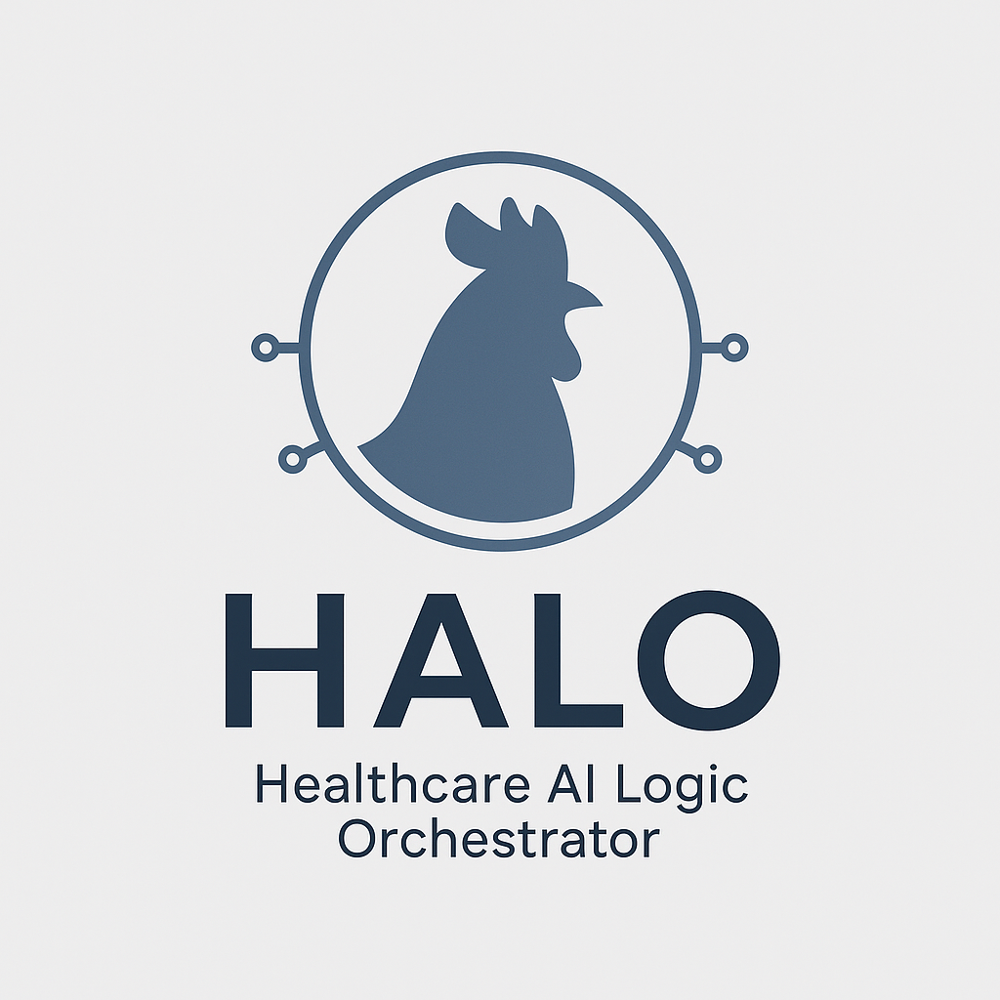

Projects Powered by HALO AI
Each of our projects tackles a real-world challenge with practical AI — optimized for security, precision, and adaptability.
🌟 Flagship Initiatives
- Gallo AI: Transforms contracts, invoices, and quotes into searchable, auditable, structured gold.
- Doodledoo: Ask your data anything — in plain English. Smart SQL meets RAG meets you.
- Nightingale: From face sheets to clinical notes — export-ready FHIR with built-in masking + provenance.
- GalloDoc Schema: The future of document standards — human-readable, LLM-optimizable, and audit-secure.
🔬 Experimental & Upcoming
- HALO Gateway: One API to rule all your models — Ollama, PaddleOCR, LayoutLM, and beyond.
- Smart Redaction Engine: Regex + vision + language models = no leak left behind.
- FHIR Bundler: Auto-build entire FHIR bundles from structured + narrative medical docs.
🚧 Built in the open. Tuned for the real world. Ready when you are.